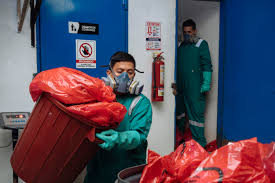

<link rel="stylesheet" href="estilo.css">
<header class="header">
   <div class="menu container">
     <label for="menu">
       
     </label>
     <nav class="navbar">
       <ul>
         <li><a href="#Introduccion" class="selected">Introducción</a></li>
         <li><a href="#Contaminacion">Contaminación</a>
           
         </li>
         <li><a href="#Tipos de contaminacion">Tipos de contaminación</a>
           <ul>
             <li><a href="CTMNC.Agua.html">Agua</a></li>
             <li><a href="CTMNC.Aire.html">Aire</a></li>
             <li><a href="CTMNC.Suelo.html">Suelo</a></li>
             <li><a href="Economia circular.html">Economía circular</a></li>
             <li><a href="Gestion.html">Gestión de Residuos</a></li>
             <li><a href="RSDS.biomedicos.html">Pagina principal</a></li>
             <li><a href="RSDS.electronicos.html">Residuos electrónicos</a></li>
           </ul></li>
       </ul>
     </nav>
   </div>
<h1>Residuos Biomedicos</h1>
<p>
    Los residuos biomédicos son materiales generados durante el diagnóstico, tratamiento o investigación de enfermedades en seres humanos o animales. 
    Este tipo de residuos puede ser potencialmente peligroso, ya que puede contener agentes infecciosos, sustancias químicas, o elementos que pueden
     causar daño a la salud pública o al medio ambiente si no se manejan adecuadamente.
</p>
Estos residuos incluyen:
<p>
1. Residuos infecciosos: material contaminado con sangre, tejidos, fluidos corporales, o cultivos de laboratorio.
</p>
2. Residuos químicos: productos químicos utilizados en laboratorios y tratamientos, como solventes, desinfectantes, y fármacos.
<p>
3. Residuos punzocortantes: agujas, bisturís, y otros objetos filosos que pueden causar lesiones e infecciones.
</p>
4. Residuos radioactivos: elementos utilizados en procedimientos de diagnóstico o tratamiento que contienen materiales radiactivos.
<p>
5. Residuos de patología: tejidos humanos o animales removidos durante cirugías o autopsias.
</p>
El manejo seguro de los residuos biomédicos incluye la recolección, segregación, tratamiento, y disposición final, con el objetivo de minimizar los
 riesgos sanitarios y ambientales.
 </p>
 
 
</p>